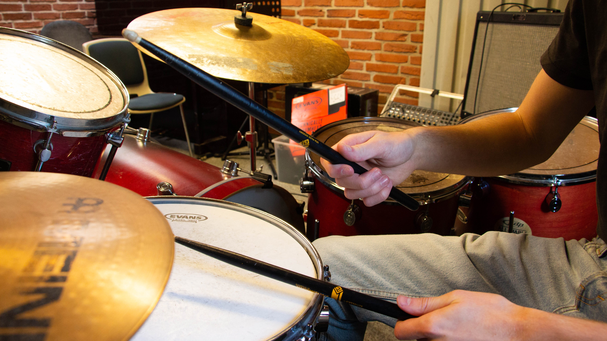

THE ROLE OF DRUMS IN MUSIC
Drums create a rhythm - structure for songs on which other instruments can be placed. The most famous form of drums in contemporary world and the thing that comes to mind at the very first place is a drum kit. However, this instrument is made of some other. How’s that? We’ll show it later in this article.
PLACE IN THE INSTRUMENT FAMILY
As a matter of fact, drums are the part of the group of instruments called percussion. This section includes all the other that can, saying in simple words, create a sound by hitting it - for example:
- cowbells,
- cymbals,
- timpani (kettles),
- toms,
- snares,
- bass drums,
- tambourines,
- xylophone,
- shakers,
- cajons (this drum looks like a box and is played by bare hands while sitting on it)
and many more!
It could be seen that this term is quite wide and it contains lots of instruments, as well as standard elements of the drum kit.
cajon
DRUM KIT IN A NUTSHELL - THE BASE
The very base of the standard drum kit is usually a three-piece set:
- Snare drum - the one in the centre, it has a metal string that is attached under and create the unique and recognizable sound;
- Bass drum (or a kick drum) – the one that is placed on a floor and is hit by the pedal with the leg, it is usually low-tuned;
- Hi-hat – a construction of two little cymbals that can be closed and opened with our second leg;
WHAT OTHER ELEMENTS ARE INCLUDED IN A DRUM KIT?
Besides the three elements mentioned before, the drum kit might consist of more, which could be:
- Toms (also known as tom-toms) are drums that can be placed in a drum kit and tuned in many ways. People usually put from 2 to 5 toms (in order to create a wide range of possibilities while sitting behind the set). They are often used for fills – transitions through the drums which make music more appealing and engaging for the listener.
- Crash – this cymbal is mainly used to make accents. It has “splashy”, long sound and is always supported by the kick.
- Ride – the cymbal of short-lasting sound is used to create a rhythmic pattern. It can work as a replacement for a hi-hat to make music more varied.
Sometimes people also want to experiment more by adding for example some other percussions or implement double pedal for a bass drum.

FAMOUS DRUMMERS AND THEIR INFLUENCE ON MUSIC
Drums are significant in music – they set up the rhythm of the song and they are a huge instrument that could be played in an impressive way. It’s not surprising then, that a lot of drummers become well-known for their unique style - like John Bonham, Ringo Starr and Stewart Copeland – their precision – like Mike Portnoy, Danny Carey and Neil Peart – their wide range of musical skills – like Phil Collins and Dave Grohl – or their expression and influence – like Buddy Rich, Chad Smith and Keith Moon. It’s simply impossible to mention all of the greatest drummers – there are lots of them and all of them have or had an impact on the music.